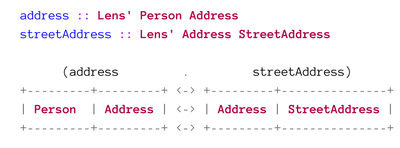
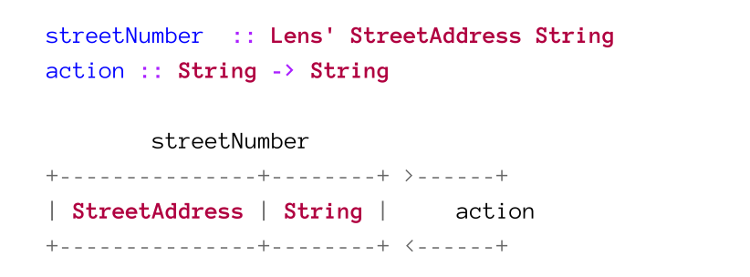
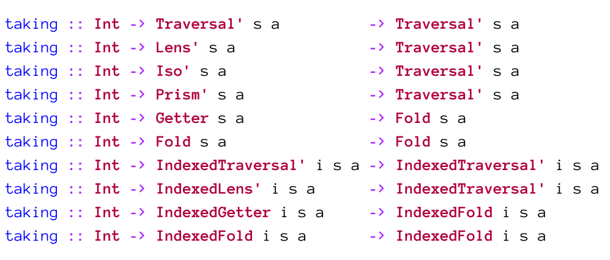
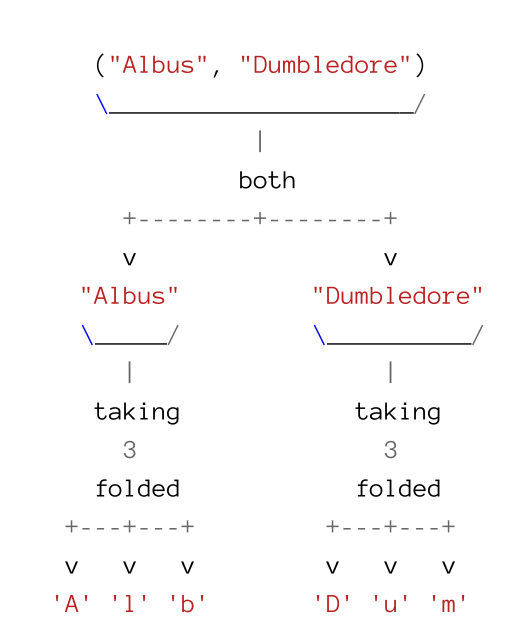

Optics
Capabilities
In the following table the capabilities of each optics is shown.
| Lens | Traversal | Fold | |
|---|---|---|---|
| Get | Single | Many | Many |
| Set/Modify | Single | Many | Nope |
| Traverse | Single | Many | Nope |
Operators
There is a general patterns applied to most operators in the Optics library. This means that the name of an operator can usually be guessed.
| Symbol | Explenation | Example |
|---|---|---|
^ |
Denotes that the action views/gets something | ^. |
. |
Denotes the absence of any other modifiers | ^. |
% |
Denotes an actinon which modifies using a function | %~ |
~ |
Denotes that this action updates/sets something | %~, .~ |
< |
A prefix for update/set actions, which will return the altered value as well as the whole structure | <+~ |
<< |
A prefix for update/set action, which will return the old value | <<+~ |
Lenses
A lens abstracts the getter and setter into one value. A lens can focus a single type and always returns a type (so a lens can't return a from Either a b, because the type could also be b).
Their are two types of lenses:
- Simple lens:
Lens' s a, wheresis the structure andais the focus type. This lens always returns the same type as it gets and it can be created withmakeLenses - Polymorphic Lens:
Lens s t a b, wheresis the input structure,tthe output structure,athe input focus andbthe output focus. This type of lenses can change the types of the structure and focus.
data Settings a = Settings {
_path :: String,
_object :: a
} derving (Show)
path :: Lens' Settings a
path = lens getter setter
where
getter :: Settings a -> String
getter = _path
setter :: Settings a -> String -> Settings a
setter oldSettings newPath = oldSettings{ _path = newPath }
object :: Lens (Settings a) -> (Settings b) -> a -> b
object = lens getter setter
where
getter :: Settings a -> a
getter = _object
setter :: Settings a -> b -> Settings b
setter oldSettings newObj = oldSettings{ _object = newObj }
Lens Laws
- You get back what you set (set-get) When you set something, you always get the same thing back
- Setting back what you got doesn't do anything (get-set)
When you set what
viewreturned to you, than nothing changes
- Setting twice is the same as setting once (set-set) Setting multiple times the same value does always do the same thing
Virtual Fields
Lenses can be used to provide an abstraction layer above the actual data structure. Virtual Fields can be created by writing custom lens getters and setter. The getter and setter can apply a function to convert the field.
This can also be done later, when the underlying data structure changes but the public API shouldn't change.
Lenses & Operators
The following operators can be used with lenses:
view :: Lens' s a -> s -> aReturns the value which the given lens focuses onset :: Lens s t a b -> b -> s -> torset :: Lens' s a -> a -> s -> sSets the value of the focus of a lensover :: Lens s t a b -> (a -> b) -> s -> torover :: Lens' s a -> (a -> a) -> s -> sFetches the focused value, applies the given function and then uses set t set the focused value
There are infix operator which are synonyms to the operators above:
| Operator | Action | Type |
|---|---|---|
^. |
flipped view | s -> Lens' s a -> a |
.~ |
set | Lens s t a b -> b -> s -> t |
%~ |
over | Lens s t a b -> (a -> b) -> s -> t |
Some common lenses are :
_1 :: Lens (a, other) (b, other) a bSets the focus on the first element of a tuple_2 :: Lens (other, a) (other, b) a bSets the focus on the second element of a tuple
data Payload = Payload
{ _weightKilos :: Int,
_cargo :: String
}
deriving (Show)
makeLenses ''Payload
data Ship = Ship {_payload :: Payload}
deriving (Show)
makeLenses ''Ship
serenity :: Ship
serenity = Ship (Payload 5000 "Livestock")
-- get
>>> view payload . cargo serenity
-- > "Livestock"
>>> serenity ^. payload . cargo
-- > "Livestock"
-- set
>>> set (payload . cargo) "Medicine" serenity
>>> serenity & payload . cargo .~ "Medicine"
>>> serenity
& payload . cargo .~ "Chocolate"
& payload . weightKilos .~ 2310
-- over
>>> serenity
& payload . weightKilos .% subtract 1000
& payload . cargo .~ "Chocolate"
Composing Lenses
Lenses compose very easily. Imagin each lens being a domino which can be fitted together if the types match. From the expression below, we'll get address :: Lens' Person StreetAddress. The Address type is "hidden" in the composition. 
At the the right end of a domino line, we can use an action to do something, like modifying the focused value. 
Here an actual Example:
wave :: Wool -> Sweater
weave Wool = Sweater
gameState :: (Player, Item Wool)
gameState = (Player Item Wool 5)
-- crafts a sweater
gameState' :: (Player, Item Sweater)
gameState' = over (_2 . material ) weave gameState
Folds
A fold is like a query and can:
- focus on multiple things
- can only get, not set data
A fold has the data type Fold s a, where the s is the structure on which the query runs and a is the return value. A fold returns zero or more from a
A fold, like a lens, doesn't contain data. It is an "operation" which knows how to extract zero or more elements from an type.
We can create a custom Fold with the function folding :: Foldable f => (s -> f a) -> Fold s a, which takes as an argument a function which transforms the type s into a folding type a.
data ShipCrew = ShipCrew
{ _captain :: String,
, _conscripts :: [String]
} deriving (Show)
makeLenses ''ShipCrew
collectCrewMembers :: ShipCrew -> [String]
collectCrewMembers crew = (_captain crew) : _conscripts crew
crewMembers :: Fold ShipCrew String
crewMembers = folding collectCrewMembers
Operators
folded : Foldable f => Fold (f a)Withfoldedan instance ofFoldablelike a list can be converted into aFold.
A lens can be used to focus in on an element of a fold. This works because every lens has a getter to focus on one element exactly. This fits into the definition of a fold which needs to focus on zero or more elements.
data CartItem =
CartItem { _name :: String
, _count :: Int}
makeLenses ''CarItem
cart :: [CartItem]
cart = [CartItem "Black Shirt" 3, CarItem "Water Bottle" 2]
-- get a list of all items
cart ^.. folded -- will return [CartItem "Black Shirt" 3, CarItem "Water Bottle" 2]
toListOf folded cart -- the same as above
cart ^.. folded . name -- ["Black Shirt", "Water Bottle"]
toListOf (folded . name) cart -- the same as above
to :: (s -> a) -> Fold s aCreates a fold which maps from the typesto the folded typea. This function maps 1-to-1. Because of this, it couldn't be used to extract values fromMaybe. If a 1-to-many relationship is needed,foldingcan be used
newtype Name = Name { getName :: String } deriving (Show)
Name "Hi" ^. to getName -- will return "Hi"
Name "hello world" ^. to getName . to (fmap toUpper) -- will return "HELLO WORLD"
(ShipCrew "Captain Tom" ["Franz", "Max"]) ^.. crewMembers . to (fmap toUpper) -- will return ["CAPTAIN TOM", "FRANZ", "MAX"]
backwards :: Fold s a -> Fold s aReverses the elements of a fold
[1, 2, 3] ^.. backwards folded -- will return [3, 2, 1]
[(1, 2), (3, 4)] ^.. backwards (folded . both) -- will return [4, 3, 2, 1]
[(1, 2), (3, 4)] ^.. backwards folded . both -- will return [3, 4, 1, 2]
only :: Eq a => a -> Prism' a ()A helper fold operator which can simplify toonly :: Eq a => a -> Fold a (). It return()only if the input is equal to the givena
Actions
-
toListOf :: Fold s a -> s -> [a]/(^..) :: s -> Fold s a -> [a]To use a fold on data the functiontoListOfcan be used. This will take aFoldand aFoldablestructure and extracts[a]out of it. A synonym is(^..) :: s -> Fold s a -> [a] -
elemOf :: Eq a => Fold s a -> a -> s -> BoolChecks if the givenais in theFold
anyOf :: Fold s a -> (a -> Bool) -> s -> BoolChecks if the predicates returns true for at least one element
allOf :: Fold s a -> (a -> Bool) -> s -> BoolCheck if the predicates returns true for all elements
findOf :: Fold s a -> (a -> Bool) -> s -> Maybe aTries to find an element for which the predicate returns true
has :: Fold s a -> s -> BoolChecks if there is at least one element
hasn't :: Fold s a -> s -> BoolChecks if there are no elements
lengthOf :: Fold s a -> s -> IntReturns how many elements there are
sumOf :: Num n => Fold s n -> s -> n/productOf :: Num n => Fold s n -> s -> nCalculates the sum/product of all elements
firstOf :: Fold s a -> s -> Maybe a/preview :: Fold s a -> s -> Maybe a/( ^?) :: s -> Fold s a -> Maybe a/lastOf :: Fold s a -> s -> Maybe afirstOf,previewand(^?)return the first element;lastOfreturns the last element
firstOf folded [] -- will return Nothing
firstOf folded [1..4] -- will return Just 1
preview folded [1..4] -- will return Just 1
[1..4] ^? folded -- will return Just 1
lastOf folded [1..4] -- will return Just 4
minimumOf :: Ord a => Fold s a -> s -> Maybe a/maximumOf :: Ord a => Fold s a -> s -> Maybe aReturns the minimum or maximum of the elements
minimumOf folded [1..4] -- will return Just 1
maximumOf folded [1..4] -- will return Just 4
minimumOf folded [] -- will return Nothing
maximumOf folded [] -- will return Nothing
maximumByOf :: Fold s a -> (a -> a -> Ordering) -> s -> Maybe a/minimumOf :: Fold s a -> (a -> a -> Ordering) -> s -> Maybe aThese function return the "largest" or "smallest" element determinted by the function(a -> a -> Ordering)
data Person = Person { _name :: String, _age :: Int} deriving (Show)
maximumByOf (folded) (comparing _age) [Person "Seb" 22, Person "Marie" 33] -- will return Person "Marie" 33
minimumByOf (folded) (comparing _age) [Person "Seb" 22, Person "Marie" 33] -- will return Person "Seb" 22
traverseOf_ :: Functor f => Fold s a -> (a -> f r) -> s -> f ()/forOf_ :: Functor f => Fold s a -> s -> (a -> f r) -> f ()traverseOf_andforOf_are used to execute side effects with elements and are the optic equivalents oftraverse_andfor_
data Person = Person {_name :: String, _age :: Int} deriving (Show)
persons = [Person "Seb" 22, Person "Ann", 34]
showPerson :: Person -> String
showPerson p = _name p <> ": " <> show (age p)
traverseOf_ (folded . to showPerson) putStrLn persons
-- will return:
-- Seb: 22
-- Ann: 34
-- example from Optics By Example / page
>>> import Control.Monad.State
>>> execState (traverseOf_ folded (modify . const (+1)) tvShows) 0
2
-
foldOf :: Monoid a => Fold s a -> s -> a/foldMapOf :: Monoid r => Fold s a -> (a -> r) -> s -> rfoldOfandfoldMapOfare function which allows the use of Monoids with folds. -
foldByOf :: Fold s a -> (a -> a -> a) -> a -> s -> a/foldMapByOf :: Fold s a -> (r -> r -> r) -> r -> (a -> r) -> s -> rfoldByOfandfoldMapByOfare similar tofoldOfandfoldMapOf, but allow the callee to specifiy the append function and identity value.
tvShows = [("How I Met Your Mother", "Josh Radnor"), ("How I Met Your Mother", "Alyson Hannigan"), ("Buffy the Vampire Slayer", "Alyson Hannigan")]
foldMapByOf (folded . _2) (M.unionWith (+)) mempty (\n -> M.singleton n 1) tvShows
-- will return [("Alyson Hannigan",2),("Josh Radnor",1)]
foldrOf :: Fold s a -> (a -> r -> r) -> r -> s -> r/foldlOf :: Fold s a -> (r -> a -> r) -> r -> s -> rfoldrOfandfoldlOfare functions which are likefoldOfandfoldMapOf, but the identity value and append function can be set by parameters. They are the equivalence offoldrandfoldl.
Concat existing Folds
Already existing folds (and lenses) can be combined to one big Fold if the types match.
Here's an alternative implementation of crewMembers
crewMembers :: Fold ShipCrew String
crewMembers = folding (\s -> s ^.. captain
<> s ^.. conscripts . folded)
Traversal
A traversal can, like a fold, get zero or more elements but also set zero or more elements. Because of this, lenses and folds are valid traversal but not all traversals are lenses and folds.
The type Traversal s t a b has the following generics:
s- the structure before the actiont- the structure after the actiona- the focus before the actionb- the focus after the action
Wenn the type of the focus is changed by a setting operation the operation has to convert all elements. An operation which only focuses on part of the traversal can't change the type of the focus.
Like with lenses, there is also a simple traversal: Traversal' s a, where the generic mean:
s- the structure before and after the actiona- the focus before and after the action
Actions
When actions are used as a setter, then all values are changed, which would be returned with a getter. With these kind of action only part of the traversal can be updated. This also means that the focused type can't c
[1, 2, 3, 4, 5] & taking 3 traversed *~ 10 -- will return [10, 20, 30, 4, 5]
[1, 2, 3, 4, 5] & dropping 3 traversed *~ 10 -- will return [1, 2, 3, 40, 50]
[1..5] & traversed . filtered even *~ 10 -- will return [1, 20, 3, 40, 5]
-
traversed :: Traversable f => IndexedTraversal Int (f a) (f b) a bCreates aTraversalwhich will focus on every element in the data structure. It is more powerfull thanfolded, but can be used with less types. -
both: Bitraversable r => Traversal (r a a) (r b b) a bbothcan be simplified toboth: Bitraversable r => Fold (r a a) aand creates aFoldfor a tuple with the same types ((String, Int)wouldn't be valid). But only the last two item of a tuple are actually traversed.
("hello", "wolrd") ^.. both -- will return ["hello", "world"]
("hi") ^.. both -- will return ["hi"]
("hi", "hello", "world") ^.. both -- will return ["hello", "world"]
each :: Each s t a b => Traversal s t a beachcan be simplified toeach :: Each s s a a => Fold s a. It does almost the same thing asboth, but over an arbitrary sized tuple.
filtered :: (Choice p, Applicative f) => (a -> Bool) -> Optic' p f a aFilters a fold (or other optics) and can simplify tofiltered :: (s -> Bool) -> Fold s s
-
filteredBy :: Fold s a -> IndexedTraversal' a s sAn alternative tofilteredwhich uses a fold as the predicate. The type signature above is simplified.on -
taking :: (Conjoined p, Applicative f) => Int -> Traversing p f s t a a -> Over p f s t a aThis method is the equivalent totakewith traversals and folds.  -
dropping :: (Conjoined p, Applicative f) => Int -> Over p (Control.Lens.Internal.Indexed.Indexing f) s t a a -> ver p f s t a aThis method is the fold / traversal equivalent todrop
[1..] ^.. taking 5 folded -- will return [1, 2, 3, 4, 5]
[[1, 2, 3], [10, 20, 30], [100, 200, 300]] ^.. folded . taking 2 folded -- will return [1, 2, 10, 20, 100, 200]
High-Order actions apply, like other actions, two an element of a fold, not to the fold itself. The following graphic shows the code ("Albus", "Dumbledore") ^.. both . taking 3 folded

-
takingWhile :: (a -> Bool) -> Fold s a -> Fold s aThe traversal/folding equivalent totakeWhile. It accepts a predicate and will return element as long as the predicate returns true -
droppingWhile :: (a -> Bool) -> Fold s a -> Fold s aThe traversal/folding equivalent todropWhile. It will "drop" elements from fold elements until predicate returns false
[1..] ^.. takingWhile (< 5) folded -- will return [1, 2, 3, 4]
[1..10] ^.. droppingWhile (< 5) folded -- will return [5, 6, 7, 8, 9, 10]
-
worded :: Applicative f => IndexedLensLike' Int f String StringSimplifies toworded :: Traversal' String Stringand will focus on each word in the string -
lined :: Applicative f => IndexedLensLike' Int f String StringSimplifies tolined :: Traversal' String Stringand will focus on each line in the string
"Hello world" ^.. worded -- will return ["Hello", "world"]
"Hello\n How are you?" ^.. lined -- will return ["Hello"," How are you?"]
"Hello world" & worded %~ \s -> "*" ++ s ++ "*" -- will return "*Hello* *world*"
beside :: Traversal s t a b -> Traversal s' t' a b -> Traversal (s,s') (t,t') a b
beside applies a the first traversal to the first element of the tuple and the second traversal to the second tuple element.
("hi", "moin") ^.. beside (to length) (to $ const 200) -- will return (2, 200)
("hello", (2, "moin")) ^.. beside id _2 -- will return ("hello", "moin")
("hello", (2, "moin")) & beside id _2 %~ (++ "!") -- will return ("hello!", (2, "moin!"))
element :: Traversable f => Int -> Traversal' (f a) aFocuses on the element with the given index
[0..4] ^? element 2 -- will return Just 2
[0..4] ^? element 20 -- will return Nothing
[0..4] & element 2 *~ 10 -- will return [0, 1, 20, 3, 4]
Operators
The operator over (aka. %~) and set (aka..~), which are known from lenses, can also be used with traversals.
("hello", "moin") & both %~ (++ "!") -- will return ("hello!", "moin!")
over both (++ "!") ("hello", "moin") -- will return ("hello!", "moin!")
("hello", "moin") & both %~ length -- will return (5, 4)
("hello", "moin") & both .~ "good morning" -- will return ("good morning", "good morning")
set both "good morning" ("hello", "moin") -- will return ("good morning", "good morning")
Effects can be run on Traversals with the method traverseOf :: LensLike f s t a b -> (a -> f b) -> s -> f t which can be spezialized to traverseOf :: Traversal s t a b -> (a -> f b) -> s -> f. traverseOf works like traverse but with Traversables
traverseOf both readMaybe ("1", "2") :: Maybe (Int, Int) -- will return (1, 2)
traverseOf both readMaybe ("hello", "2") :: Maybe (Int, Int) -- will return Nothing
traverseOf each readMaybe ["1", "2"] :: Maybe [Int] -- will return Just [1, 2]
traverse readMaybe ["1", "2"] :: Maybe [Int] -- will return Just []